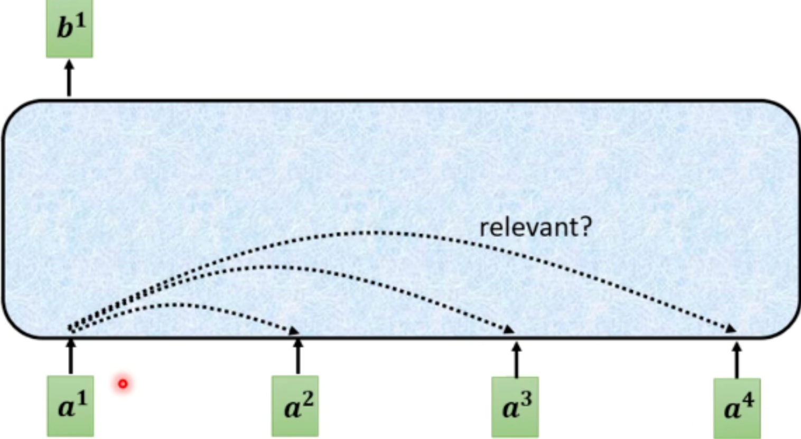
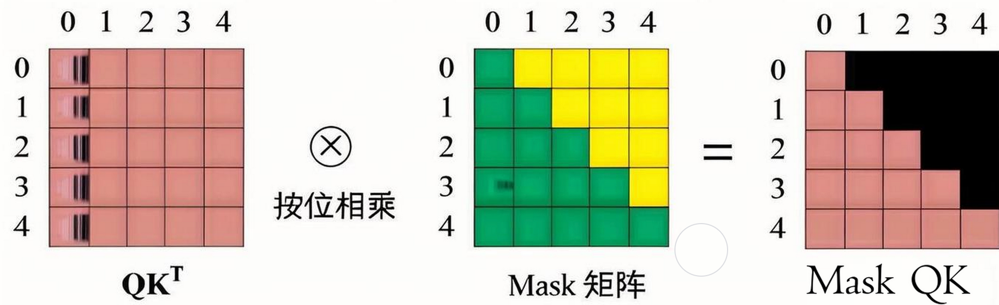

04.Attention 注意力机制#
Author by: 张志达
!!!!!!!!! 内容太过于常规和简单，参考 PDF 和 PPT 里面的，对于 Attention 的由来，最简单的原理开始。
1. Attention 机制要解决的问题#
在传统的序列建模中，如 RNN 和 LSTM，模型需要逐步处理序列中的每个元素，这导致了几个关键问题：
1.1 长距离依赖问题#
问题：RNN 在处理长序列时，信息传递会逐渐衰减，难以捕捉远距离元素之间的关系
影响：对于长文本或长序列，模型性能显著下降
1.2 并行化困难#
问题：RNN 的序列依赖特性使得计算无法并行化
影响：训练速度慢，计算效率低
Attention 机制通过直接建模序列中任意两个位置之间的关系，有效解决了这些问题。
2. Self-Attention 自注意力机制#
Self-Attention 是 Transformer 的核心组件，它允许序列中的每个位置直接关注到序列中的所有其他位置。
2.1 基本原理#

对于每个输入向量 a, 经过蓝色部分 self-attention 之后都输出一个向量 b, 这个向量 b 是考虑所有输入向量对 a1 产生的影响才得到,
2.2 Attention 计算的公式#
Self-Attention 通过三个关键矩阵（Query、Key、Value）来计算注意力权重：
Attention(Q, K, V) = softmax(QK^T / √d_k)V
其中：
Q (Query): 查询矩阵，表示"我想要什么信息"
K (Key): 键矩阵，表示"我有什么信息"
V (Value): 值矩阵，表示"实际的信息内容"
d_k: Key 向量的维度，用于缩放
2.3 Attention 计算具体步骤#
计算两个向量的相关度， 也叫 attention 的 score. 根据输入 Embedding 向量 an... 得到向量 bn...
将输入向量分别乘以不同的两矩阵(Wq，Wk)，得到向量(Aq, Ak)
将步骤 1 得到的向量(Aq, Ak)做点积, 得到结果。
得到的结果就代表两个向量相关度, 也叫 Attention score.(计算不同向量间的相关度 使用的 Wq 与 wk 为同一个)
计算输入向量 a 与其他所有向量的 上述计算结果, 使用 Aq * Xk(Xk 代表其他向量乘以 Wk 得到的)
对 Attention score 进行缩放(得到的结果 除以固定值(eg:64) 让模型梯度更稳定)和归一化, 得到 softmax Sore(输入一个 soft-max(也可用 relu 等激活函数))
将输入向量乘以新的矩阵 Wv 得到新的向量 v
将得到的每个向量都乘以 Attention Score, 再将其加起来得 得到结果 attention 向量 b
重点步骤#
上述中 Wq,Wk,Wv(也较 query, key, value) 是三个未知量 通过训练得出
softmax 计算为 计算当前向量与其他向量关系的 attention score 进行归一化
2.2 实现伪代码#
def self_attention(X, W_q, W_k, W_v):
"""
Self-Attention 实现
X: 输入序列 [seq_len, d_model]
W_q, W_k, W_v: 可学习的权重矩阵
"""
# 计算 Q, K, V
Q = X @ W_q # [seq_len, d_k]
K = X @ W_k # [seq_len, d_k]
V = X @ W_v # [seq_len, d_v]
# 计算注意力分数
scores = Q @ K.T # [seq_len, seq_len]
scores = scores / sqrt(d_k) # 缩放
# 应用 softmax 得到注意力权重
attention_weights = softmax(scores) # [seq_len, seq_len]
# 加权求和得到输出
output = attention_weights @ V # [seq_len, d_v]
return output, attention_weights
3. Multi-Head Attention 多头注意力#
多头注意力机制允许模型在不同位置上关注不同的信息。具体, 输入的特征向量 会被分成多个"头", 每个头独立的计算注意力权重, 然后将这些结果合并起来得到最终输出
3.1 设计思想#
并行处理：同时计算多个注意力头
不同视角：每个头关注不同的特征子空间
信息融合：将多个头的输出拼接后通过线性变换融合
3.2 数学表示#
数学表示#
\(Q, K, V\)：分别为输入的 Query、Key、Value 矩阵
\(W_i^Q, W_i^K, W_i^V\)：第 \(i\) 个头的可学习权重矩阵
\(\text{head}_i\)：第 \(i\) 个注意力头的输出
num_heads：注意力头的数量
\(\text{Concat}(\cdot)\)：将所有头的输出在特征维度拼接
\(W^O\)：输出的线性变换权重矩阵
\(d_k\)：每个头的 Key/Query 的维度
\(\text{softmax}\)：对每一行进行 softmax 归一化
d_model: 隐藏层的总维度，通常是模型的输入特征维度
在多头注意力中, \(d_{model}\) 通常会被 均等地分配每个注意力头。具体来说, \(d_{model}\) 会被分成份, 每份的维度就是 \(d_k\)
d_{model} = num\_heads \times d_k
3.3 实现伪代码#
def multi_head_attention(X, num_heads, d_model):
"""
Multi-Head Attention 实现
X: 输入序列 [seq_len, d_model]
num_heads: 注意力头数量
d_model: 模型维度
"""
d_k = d_model // num_heads
# 为每个头创建 Q, K, V 的权重矩阵
W_q = [random_matrix(d_model, d_k) for _ in range(num_heads)]
W_k = [random_matrix(d_model, d_k) for _ in range(num_heads)]
W_v = [random_matrix(d_model, d_k) for _ in range(num_heads)]
heads = []
for i in range(num_heads):
# 计算第 i 个头的输出
head_i, _ = self_attention(X, W_q[i], W_k[i], W_v[i])
heads.append(head_i)
# 拼接所有头的输出
concat_heads = concatenate(heads, axis=-1) # [seq_len, d_model]
# 最终线性变换
W_o = random_matrix(d_model, d_model)
output = concat_heads @ W_o
return output
3.4 多头注意力优势#
捕捉多种特征子空间的信息
多头机制允许模型在不同的子空间中并行地学习不同的注意力表示，每个头可以关注输入的不同部分或不同的特征组合，从而提升模型的表达能力。增强模型的表示能力
单一注意力头可能受限于其维度，难以捕捉复杂的依赖关系。多头注意力通过并行多个头的方式，能够综合多种视角的信息，提升对序列内部复杂关系的建模能力。提升训练的稳定性
多头机制有助于分散每个头的学习压力，降低单一头过拟合或学习失败的风险，使整体训练过程更加稳定和高效。并行计算高效
多头注意力可以在硬件上高效并行实现，充分利用现代计算资源，加快模型的训练和推理速度。适应不同任务和场景
不同的注意力头可以自动学习到对不同任务或输入特征的关注模式，使模型更具泛化能力和适应性。
4. Masked Attention 掩码注意力#
Masked Attention 主要用于，确保在生成序列时只能看到当前位置之前的信息。
4.1 应用场景#
语言建模：预测下一个词时不能看到未来的词
序列生成：自回归生成过程中保持因果性
训练效率：并行训练时保持正确的依赖关系
4.2 掩码机制#
def masked_attention(Q, K, V, mask=None):
"""
Masked Self-Attention 实现
mask: 掩码矩阵，True 表示需要屏蔽的位置
"""
# 计算注意力分数
scores = Q @ K.T / sqrt(d_k)
# 应用掩码
if mask is not None:
scores = scores.masked_fill(mask, -1e9)
# Softmax 归一化
attention_weights = softmax(scores)
# 加权求和
output = attention_weights @ V
return output, attention_weights
def create_causal_mask(seq_len):
"""
创建因果掩码矩阵
"""
mask = torch.triu(torch.ones(seq_len, seq_len), diagonal=1)
return mask.bool()
4.3 掩码效果#

图中显示，掩码确保每个位置只能关注到它之前的位置，保持了生成过程的因果性。
5. 三种注意力机制的区别#
特性 |
Self-Attention |
Multi-Head Attention |
Masked Attention |
|---|---|---|---|
计算复杂度 |
O(n²) |
O(n²) |
O(n²) |
并行化 |
完全并行 |
完全并行 |
完全并行 |
信息访问 |
全局访问 |
全局访问 |
因果访问 |
参数量 |
3×d_model² |
4×d_model² |
3×d_model² |
应用场景 |
编码器 |
编码器/解码器 |
解码器 |
5.1 计算复杂度分析#
def complexity_analysis(seq_len, d_model, num_heads):
"""
计算复杂度分析
"""
# Self-Attention: O(seq_len² × d_model)
self_attn_ops = seq_len * seq_len * d_model
# Multi-Head Attention: O(seq_len² × d_model)
# 虽然头数增加，但每个头的维度减少
multi_head_ops = seq_len * seq_len * d_model
# 空间复杂度: O(seq_len²) 用于存储注意力矩阵
space_complexity = seq_len * seq_len
return {
'time_complexity': self_attn_ops,
'space_complexity': space_complexity
}
6. 总结与思考#
Attention 机制是 Transformer 架构的核心创新，它通过以下方式解决了传统序列建模的问题：
Self-Attention：建立了序列中任意位置间的直接连接
Multi-Head Attention：从多个子空间捕获不同类型的关系
Masked Attention：在生成任务中保持因果性约束
这些机制的结合使得 Transformer 能够：
高效处理长序列
完全并行化计算
捕获复杂的序列依赖关系
Attention 机制的设计体现了深度学习中对"关注重要信息"这一人类认知机制的数学建模，为后续的大语言模型发展奠定了坚实基础。
本节视频#
参考与引用#
!!!!!!!!!加入参考的文章和内容